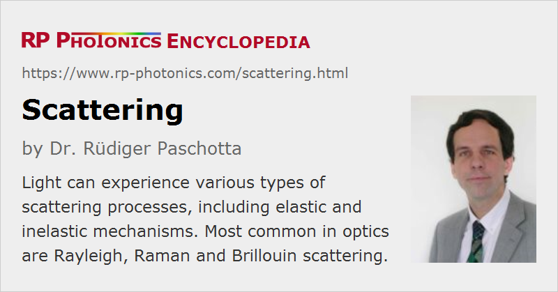

Scattering
Definition: processes where light is sent in other directions, usually but not always in random directions
More specific terms: Rayleigh scattering, Brillouin scattering, Raman scattering, hyper Raman scattering
German: Streuung
How to cite the article; suggest additional literature
Author: Dr. Rüdiger Paschotta
In various situations, light can be scattered, i.e., sent into other directions. The term scattering is mostly used for diffuse scattering, where light is sent into a wide range of directions. A classical example is scattering of light at a rough surface, having a microscopically irregular structure.
However, there are also cases with stimulated scattering, where the direction of scattered light is determined by some incident light.
This article describes various physical mechanisms which occur in the context of scattering of light.
Rayleigh Scattering
Rayleigh scattering, named after Lord Rayleigh, is elastic scattering of electromagnetic radiation at particles (or other entities, see below) which are much smaller than the wavelength of the radiation. In the area of optics, that usually implies particle sizes far below 1 μm, i.e., with nanometer dimensions or less.
Elastic scattering means that the wavelength of the scattered light is not changed, apart from a possible Doppler shift due to the movement. That implies that the inner energy of the scattering particles is not changed; there is no electronic excitation or deexcitation involved, for example. The process can be described such that the particles (scattering centers) experience an oscillating polarization due to the light, and that polarization leads to radiation of light in all directions. At the same time, the incident light is attenuated accordingly.
The intensity of scattering scales with the fourth power of the optical frequency, or with the inverse fourth power of the wavelength. This results from the basic properties of dipole radiation.
Further, one can show that the scattering intensity is proportional to 1 + cos2θ, where θ is the scattering angle (e.g. π for back-scattering towards the source). This means that forward and backward scattering are stronger than scattering to transverse directions. That can be understood by considering that the induced dipoles oscillate in directions perpendicular to the propagation direction of the incident light, and that they cannot radiate along the direction of oscillation.
Rayleigh scattering is the dominant reason for propagation losses in optical glass fibers (particularly single-mode fibers) at shorter wavelengths, e.g. in the visible and ultraviolet spectral range. Even for perfect glass quality, scattering occurs at the density fluctuations in the glass, which are to some extent unavoidable. Therefore, the lowest propagation losses are achievable for wavelengths just below the infrared absorption edge. For silica fibers, this is in the wavelength region around 1.5 μm to 1.6 μm.
Mie Scattering
Mie scattering occurs when the scattering particles have a similar size as the wavelength of light. Here, one has significant variations of optical phase over the scattering contributions of different locations on the particles. Here one finds that – in contrast to Rayleigh scattering – the scattering intensity does not depend that much on the optical wavelength; this is consistent with the white appearance of milk, where Mie scattering occurs at fat droplets in water which are not that small. Another finding is that forward scattering is stronger than backward scattering, because the relative phase differences of contributions from different scattering locations on the particles become smaller.
Mie scattering is particularly relevant for meteorological optics, but also in the biomedical area, for example.
Raman and Brillouin Scattering
Raman and Brillouin scattering are examples for inelastic scattering processes, where the inner energy of the scattering particles change. For Raman scattering at gas molecules, for example, the vibration and rotation states of the molecules change; typically, the molecules have a higher energy after the scattering process, which implies a correspondingly lower photon energy of the scattered light (Stokes components → Stokes shift). If the molecules are initially excited, one can also obtain anti-Stokes components with increased optical frequency. Similarly, Raman scattering can occur in solids, involving so-called optical phonons, i.e., phonons with relatively high frequencies (in the terahertz region). Brillouin scattering in solids involves acoustical phonons with much lower frequencies in the gigahertz region.
Both Raman and Brillouin scattering can be stimulated with additional incident light at the corresponding modified optical frequencies and with appropriate propagation directions. For example, stimulated Brillouin scattering in optical fibers is normally possible only in backward direction. The injected lower-frequency backward wave experiences amplification in that process; the same holds for the involved acoustic wave. Even without injecting a counterpropagating light wave, for sufficiently high Brillouin gain one may obtain a strong backward wave which starts with spontaneous Brillouin scattering and then experiences strong nonlinear amplification.
See the articles on Raman scattering and Brillouin scattering for more details.
Optical Propagation Losses Due to Scattering
Scattering is a major cause of propagation losses in optical components.
It has already been mentioned above that scattering limits the propagation losses which are achievable in optical glass fibers.
Scattering is also a fundamental challenge for the use of ceramic media as optical materials. However, there are some ceramic media where the crystallites are so small that scattering losses are no more substantial. For example, one can fabricate ceramic Nd:YAG with high optical quality.
Light scattering occurs not only within optical materials due to material inhomogeneities, but very often also on optical surfaces. This is because of the high refractive index contrast between optical materials and air. One generally minimizes scattering losses at optical surfaces by polishing them with very high quality.
The strong frequency dependence of Rayleigh scattering also explains why scattering losses are generally a much more severe problem with ultraviolet optics than with infrared optics.
Application of Scattering
Although scattering losses are a common problem in optics, there are also various applications of light scattering. Some examples (all involving elastic scattering):
- Light scattering is often the mechanism which produces image contrast e.g. in microscopy.
- Display screens are based on light scattering.
- Diffusely scattering surfaces are often used for providing homogeneous illumination. For example, one often uses white ceramics in laser heads of lamp-pumped lasers for obtaining smooth pump intensity distributions.
- One can construct optical diffusers based on scattering media. They are used for avoiding unwanted spatial coherence of light.
Questions and Comments from Users
Here you can submit questions and comments. As far as they get accepted by the author, they will appear above this paragraph together with the author’s answer. The author will decide on acceptance based on certain criteria. Essentially, the issue must be of sufficiently broad interest.
Please do not enter personal data here; we would otherwise delete it soon. (See also our privacy declaration.) If you wish to receive personal feedback or consultancy from the author, please contact him e.g. via e-mail.
By submitting the information, you give your consent to the potential publication of your inputs on our website according to our rules. (If you later retract your consent, we will delete those inputs.) As your inputs are first reviewed by the author, they may be published with some delay.
See also: Rayleigh scattering, Raman scattering, Brillouin scattering, diffusers
and other articles in the category general optics
|  |
If you like this page, please share the link with your friends and colleagues, e.g. via social media:
These sharing buttons are implemented in a privacy-friendly way!